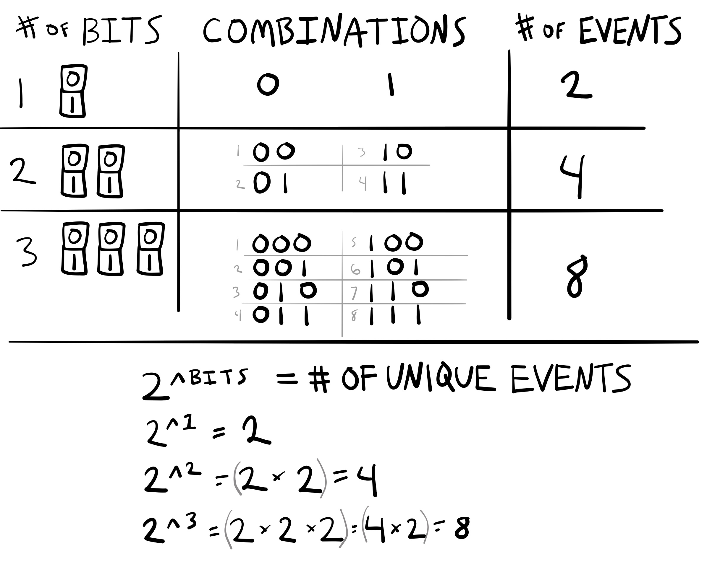

PSYC 2530: Information Processing
And metaphorical mechanisms
Matthew J. C. Crump
Last compiled 10/20/21

Reminders from last class
Reading is Chapter 7 on Information Processing
Your midterm grade is posted on Blackboard
Quiz 5 will begin on Wednesday
Roadmap
2. Donders and Processing stages
4. Hick-Hyman Law
Industrial Revolution
Cognition is like a factory assembly line

Technological Revolution
Cognition is like a telephone network

Digital Revolution
Cognition is like a computer
Donders and Processing stages
2. Donders and Processing stages
4. Hick-Hyman Law
Mental Chronometry
Using measures of time to make inferences about cognitive processes
How fast can a nerve transmit a signal?
Infinitely fast?
Or, with a certain speed?
Hermann von Helmholtz (1821-1894)
measured nerve conduction speeds in sciatic nerve of a frog
range of 24.6 - 38.4 meters per second
FC Donders (1818-1889)
Dutch Ophthalmologist
Used mental chronometry to measure mental processing times
Physiological Reaction time
First used in astronomy
Referred to individual human error in the timing of recording observations of stars
Time taken for light to hit the eye, then be transduced and conducted along nerves to produce a response
Donders’ idea
The time associated with unique stages of mental processing could be measured by systematically asking people to complete tasks of increasing complexity…
Donders’ Tasks
Donders measured reaction times in increasingly complex tasks
Simple reaction time
Go-No Go
Choice reaction time
Simple Reaction Time
Simplest reaction time task
Participants wait for ANY stimulus
And, respond as quickly as possible when the stimulus occurs
Measures “physiological” reaction time
Go-No Go
Participants wait for a specific stimulus (GO)
Respond only to the GO stimulus
Withhold response to other stimuli
Requires stimulus identification
Choice Reaction Time
There are multiple possible stimuli
Respond to each with a unique response
stimulus identification and response selection
Donder’s processing stages

Assumed mental times

Donders subtractive logic
Estimating identification time

Donders subtractive logic
Estimating response selection time

Issues with subtractive logic
What happens if two processing stages can both occur in parallel at the same time?
1950s and beyond
Interest in reaction time studies was revived in the 1950s
During this time period, the metaphor for explaining cognitive processes shifts from the assembly line metaphor, to a telecommunications metaphor
PRP effect
PRP stands for the Psychological Refractory Period (Welford, 1952)
Theoretical debate about the PRP effect reflects the metaphorical shift
Basic PRP effect
Responding to a first stimulus can sometimes delay a response to a second stimulus, especially if the stimuli are presented quickly, one after the other
Explanations of the PRP effect
Welford described a few:
- Could reflect hard-wired properties of signalling among nerve fibers
- Could reflect participants expectations…short delays might be more surprising, and the surprise lengthens the response
- PRP reflects a central mechanism with a single-channel of limited capacity…
A single channel decision mechanism
In its bare essentials this theory assumes, firstly, a number of sensory input mechanisms each capable of receiving data and storing it for a limited period so that, for example, a short series of signals can be received as a unit. Secondly, it assumes a number of effector mechanisms containing both central and peripheral elements and capable of carrying out a series of actions such as the pressing and release of a key or a series of taps (Vince, 1949) as a single unit. Thirdly, between these two it postulates a single-channel decision mechanism. This is regarded as being of limited capacity in the sense that it takes a finite time to process information and can thus only deal with a limited amount of information in a given time
Information Theory
2. Donders and Processing stages
4. Hick-Hyman Law
Claude Shannon (1916-2001)
“Father of Information Theory”
A Mathematical Theory of Communication (1948)
Founded digital circuit theory (1937)
Channel Capacity
Important concept from information theory
The amount of information that can be transmitted and received through a communication channel
Meaning of H?
Shannon’s formula defines information in terms of the predictability of a sequence of messages.
More predictable sequences = Low information
Less predictable sequences = High information
Consider three books
A book that contained the letter A repeatedly
A book that you read, enjoyed, and found meaningful
A book that contained completely random sequences of letters
Bits and Unique events

Hick-Hyman Law
2. Donders and Processing stages
4. Hick-Hyman Law
Hick-Hyman Law
A promising early demonstration suggesting that choice reaction time performance may be fundamentally governed by the amount of information in a set of choice stimuli
Choice Reaction Time Task
Participants are presented with one stimulus at a time from a set of stimuli
Participants identify each stimuli with a unique response as fast as possible
Set-size effects
Prior research had shown that choice reaction time increases with set-size
e.g., average response time to respond to any stimulus goes up and up, as the number of alternatives in the set increases
Explaining set-size effects…
Why does mean reaction time go up when the number of possible choices goes up?
Hick and Hyman’s idea
Maybe people were sensitive to the amount of information in the choice set?
Not simply being influenced by the number of alternatives
But…the predictability of the alternatives…
Confounds
Prior research typically presented alternatives randomly to participants
This meant the number of alternatives and the amount of information in a set was confounded
Hyman (1953)
Hyman, R. (1953). Stimulus information as a determinant of reaction time. Journal of Experimental Psychology, 45(3), 188–196. https://doi.org/cq3kjd
Experiment 1
The first experiment was a choice-reaction time task with 8 different conditions, corresponding to the number of alternatives, from 1 to 8.
In each condition, all stimuli were presented randomly.
Thus, the amount of bits in each condition was ranged from 0 to 3 (bits for 1 to 8 alternatives are: 0, 1, 1.58, 2, 2,32, 2,58, 2,81, and 3).
Experiment 1 results
Reaction time increased linearly with number of alternatives…
BUT, the number of alternatives, was completely confounded with the amount of bits.
Experiment II

Results

Hick-Hyman Law
Choice reaction time increases linearly as a function of the information (bits) in the stimulus set
Implications for Behaviorism
Many behaviorists were interested in understanding lawful regularities connecting a stimulus with a subsequent response
Hick-Hyman law showed a case where responses to a stimulus did not depend on the stimulus that was presented!
Instead, the speed of responding to the presented stimulus apparently depended on the predictability of the other stimuli that could have been presented
Debate about Hick-Hyman Law
Information theory was not an explanation, it was just another way to describe the experimental manipulation
Further research showed some violations to the Hick-Hyman Law (practiced subjects, non-linear trends)
Explanations
Why does choice reaction time mostly increase linearly as a function of information?
Hick’s match to template hypothesis…
Hick’s binary logic test hypothesis…
Kornblum’s priming explanations
Questions and Next class
Next class is Wednesday, Oct 20th.
Reading is Chapter 8 on Memory I
Quiz 5 will begin on Wednesday, Oct 20th